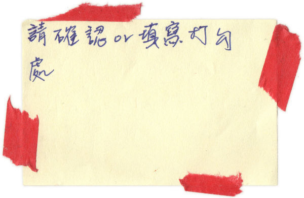
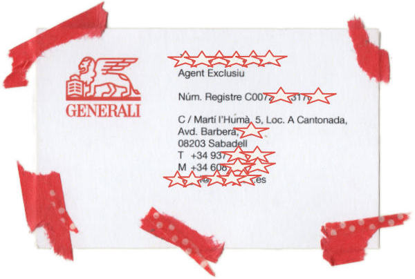
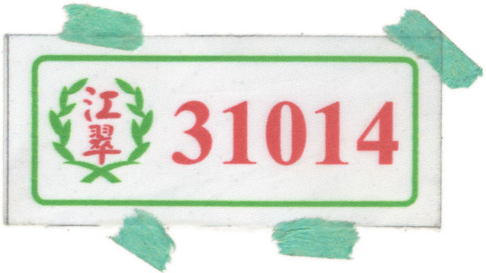
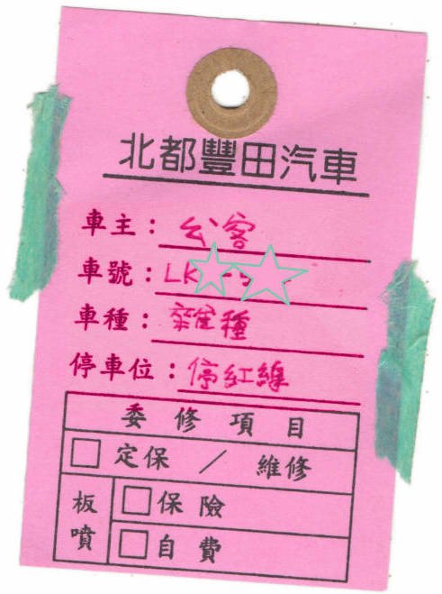
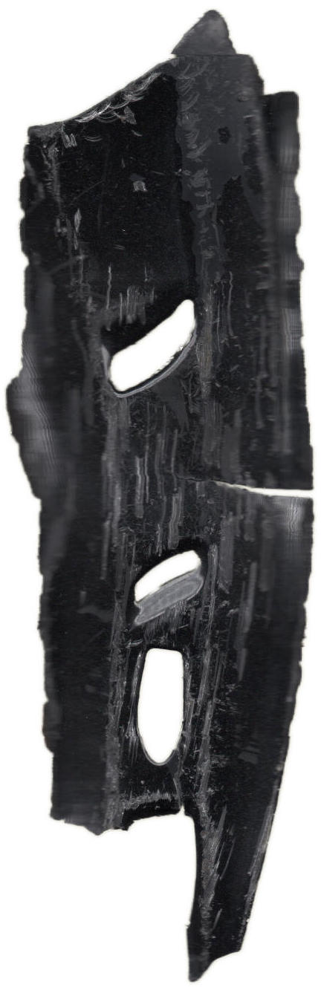

Lost Objects
↑ the header background with the Soul characters color palette ↑
🧭
There is one absolute North
and one relative North.
↑ the header background with the Soul characters color palette ↑
If you pay attention to the streets details, then they can be
something more than a transit place, they are fully packed with a
unlimited surprises for you.
Here are some objects which I have collect on the streets over the
years.
↑ touch me ↑
Some are sweet
others are bitter
Others are written by boring people or for boring purposes.

Last but not least,
notes with a monetary purpose
as always you can’t stop learning
even in the streets
Now comes the work-related...
...and school-realated items.
And finally, the most beloved and hated thing of the streets, the cars.
 